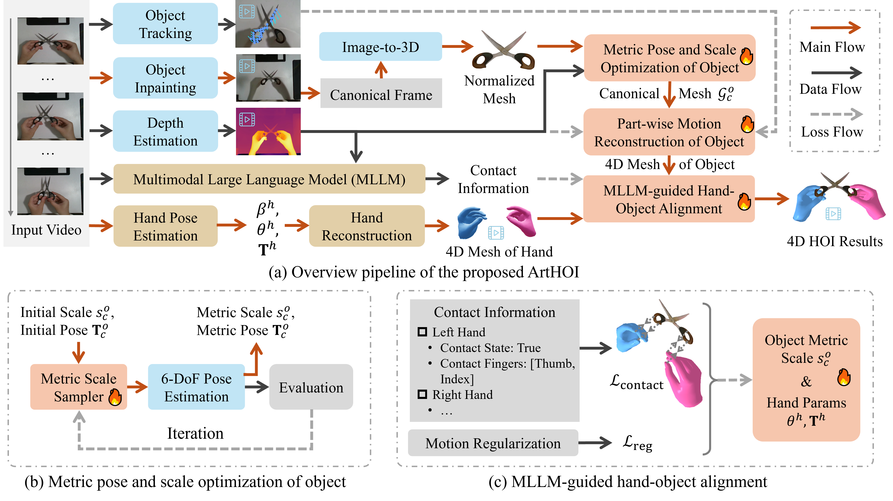
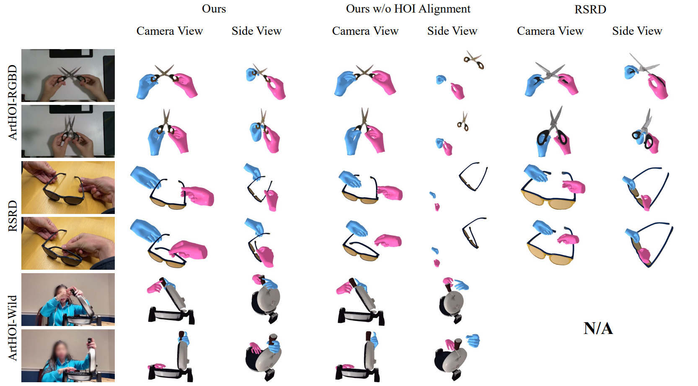
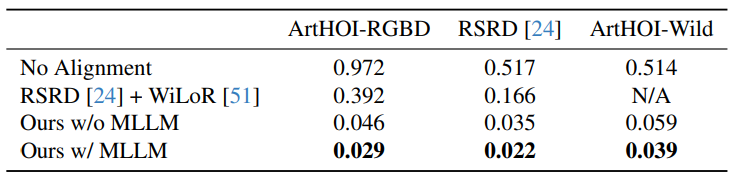
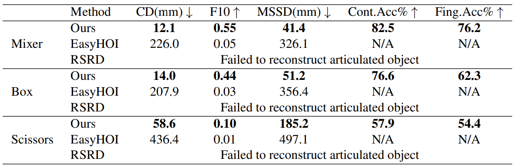

ArtHOI-RGBD: Scissors
ArtHOI: Taming Foundation Models for Monocular 4D Reconstruction of Hand-Articulated-Object Interactions
CVPR 2026
1Harbin Institute of Technology 2Shanghai Jiao Tong University
Abstract
Existing hand-object interactions (HOI) methods are largely limited to rigid objects, while 4D reconstruction methods of articulated objects generally require pre-scanning the object or even multi-view videos. It remains an unexplored but significant challenge to reconstruct 4D human-articulated-object interactions from a single monocular RGB video. Fortunately, recent advancements in foundation models present a new opportunity to address this highly ill-posed problem. To this end, we introduce ArtHOI, an optimization-based framework that integrates and refines priors from multiple foundation models. Our key contribution is a suite of novel methodologies designed to resolve the inherent inaccuracies and physical unreality of these priors. In particular, we introduce an Adaptive Sampling Refinement (ASR) method to optimize object's metric scale and pose for grounding its normalized mesh in world space. Furthermore, we propose a Multimodal Large Language Model (MLLM) guided hand-object alignment method, utilizing contact reasoning information as constraints of hand-object mesh composition optimization. To facilitate a comprehensive evaluation, we also contribute two new datasets, ArtHOI-RGBD and ArtHOI-Wild. Extensive experiments validate the robustness and effectiveness of our ArtHOI across diverse objects and interactions.
Method Overview
ArtHOI reconstructs 4D hand-articulated-object interactions from a single monocular video, with no pre-scanned object or multi-view setup. It coordinates priors from multiple foundation models while resolving their two key failure modes: (1) prior misalignment, especially in metric scale and geometry, and (2) hand-object misalignment occurs in complicated interactions.

Pipeline of ArtHOI — an optimization-based framework (a) that integrates and refines priors from multiple foundation models. The proposed ASR method (b) recovers metric-scale 3D mesh in world space from a normalized one; MLLM-guided hand-object alignment (c) promotes physically plausible HOI mesh composition.
1
Foundation Model Preprocessing
SAM2 segments the object and hand; Video-Depth-Anything and UniDepthV2 estimates metric depth and camera intrinsics. DiffuEraser inpaints the human region to isolate the object. HunYuan3D then reconstructs the object's 3D mesh from the clean canonical frame.
2
ASR: Metric Scale & Pose Estimation
Image-to-3D models output normalized meshes with no real-world scale. Adaptive Sampling Refinement (ASR) iteratively samples candidate scales, queries FoundationPose for a pose at each scale, and scores hypotheses by silhouette matching against the object mask. This robustly grounds the mesh in metric world space.
3
Part-wise Motion Reconstruction
PartField partitions the canonical mesh into parts; CoTracker3 tracks them across the inpainted video and lifts tracks to 3D via estimated depth. Per-part SE(3) motions are optimized with a visibility-aware tracking loss, which handles part-part and hand-part occlusions .
4
MLLM-Guided Hand-Object Alignment
Independently reconstructed hands (WiLoR) and objects misalign in scale and position. An MLLM (Qwen-VL-Max) is prompted with camera-perspective cues, neighboring frames, and colorized depth to infer per-frame contact states and contacting fingers. These labels drive a two-stage optimization that aligns object scale to the hand, then refines hand pose to achieve coordinated 4D articulated HOI reconstruction.
Results Gallery
Reconstructed 4D hand-articulated-object interactions across ArtHOI-RGBD, RSRD, and ArtHOI-Wild sources.

Qualitative results across three data sources. The first column shows sampled input frames; camera-view and side-view HOI meshes are shown per result. Hand reconstructions for RSRD use the same WiLoR model for fair comparison. RSRD cannot process ArtHOI-Wild videos, as it requires an object scan unavailable for internet footage.
ArtHOI-RGBD: Stapler
ArtHOI-RGBD: CD Drive
ArtHOI-RGBD: Headphones
Quantitative Results
We evaluate ArtHOI on three aspects: articulated object reconstruction accuracy, hand-object alignment quality, and MLLM contact reasoning accuracy.




Citation
If you find ArtHOI useful for your research, please consider citing our paper:
@inproceedings{wang2026arthoi,
title={ArtHOI: Taming Foundation Models for Monocular 4D Reconstruction of Hand-Articulated-Object Interactions},
author={Wang, Zikai and Zhang, Zhilu and Wang, Yiqing and Li, Hui and Zuo, Wangmeng},
booktitle={Proceedings of the IEEE/CVF Conference on Computer Vision and Pattern Recognition},
year={2026}
}